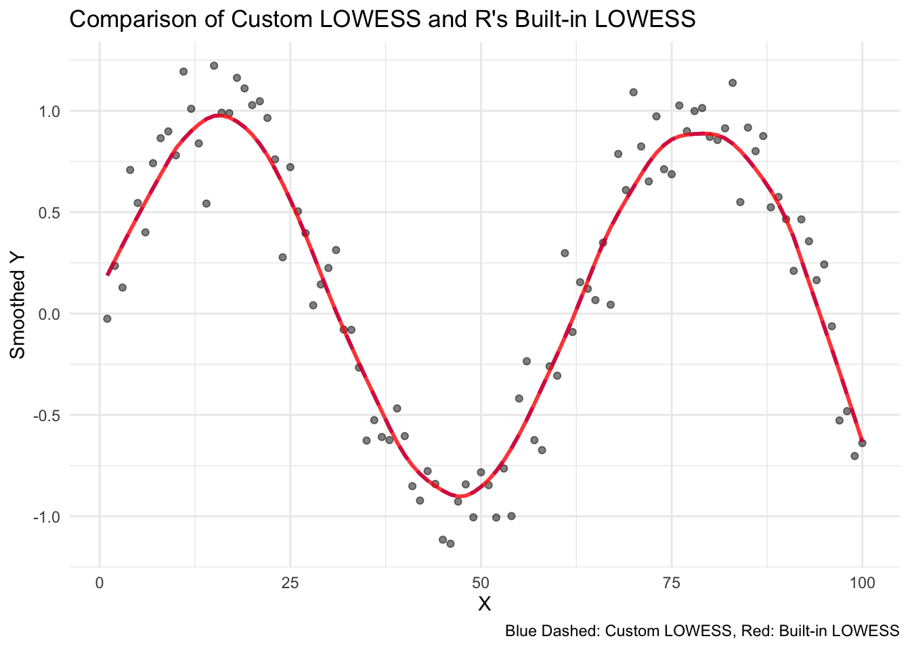

── Attaching core tidyverse packages ──────────────────────── tidyverse 2.0.0 ──
✔ dplyr 1.1.4 ✔ readr 2.1.5
✔ forcats 1.0.0 ✔ stringr 1.5.1
✔ ggplot2 3.5.1 ✔ tibble 3.2.1
✔ lubridate 1.9.4 ✔ tidyr 1.3.1
✔ purrr 1.0.2
── Conflicts ────────────────────────────────────────── tidyverse_conflicts() ──
✖ dplyr::filter() masks stats::filter()
✖ dplyr::lag() masks stats::lag()
ℹ Use the conflicted package (<http://conflicted.r-lib.org/>) to force all conflicts to become errorsPrac day 4
Question 1
Generating the simulated data.
set.seed(1)
x <- seq(1, 100, by = 1)
n <- length(x)
e <- rnorm(100, mean = 0, sd = 0.2)
y <- sin(x/10) + eQuestion 2
Implementing the lowess algorithm and defining a custom algorithm that returns the smoothed values.
customLowess <- function(x, y, f){
#span calculation
n <- length(x)
k <- ceiling(f*n)
y_smooth <- numeric(n)
for (i in 1:n){
#find distances, select k nearest neighbour
dists <- abs(x - x[i])
sorted_indices <- order(dists)
neighbors <- sorted_indices[1:k]
dmax <- max(dists[neighbors])
# Compute weights using the tricube kernel
weights <- (1 - (dists[neighbors] / dmax)^3)^3
weights[dists[neighbors] >= dmax] <- 0
# Perform weighted linear regression
X <- cbind(1, x[neighbors])
W <- diag(weights)
beta <- solve(t(X) %*% W %*% X) %*% t(X) %*% W %*% y[neighbors]
# Predict smoothed value
y_smooth[i] <- beta[1] + beta[2] * x[i]
}
return(y_smooth)
}
# Apply custom LOWESS
f <- 0.2
y_custom_lowess <- customLowess(x, y, f)Question 3
Applying R’s built-in lowess
# Apply R's built-in LOWESS
lowess_result <- lowess(x, y, f = f, iter = 0)Convert to data frames for plotting
original_data <- data.frame(x, y)
custom_lowess_data <- data.frame(x, y_smooth = y_custom_lowess)
built_in_lowess_data <- data.frame(x = lowess_result$x, y_smooth = lowess_result$y)Plot comparison
ggplot() +
geom_point(data = original_data, aes(x, y), alpha = 0.5, color = "black") +
geom_line(data = custom_lowess_data, aes(x, y_smooth), color = "blue", size = 1, linetype = "dashed", alpha = 0.8) +
geom_line(data = built_in_lowess_data, aes(x, y_smooth), color = "red", size = 1, alpha = 0.8) +
labs(title = "Comparison of Custom LOWESS and R's Built-in LOWESS",
x = "X", y = "Smoothed Y",
caption = "Blue Dashed: Custom LOWESS, Red: Built-in LOWESS") +
theme_minimal()Warning: Using `size` aesthetic for lines was deprecated in ggplot2 3.4.0.
ℹ Please use `linewidth` instead.